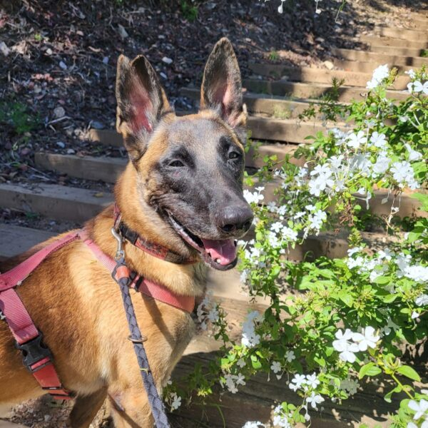
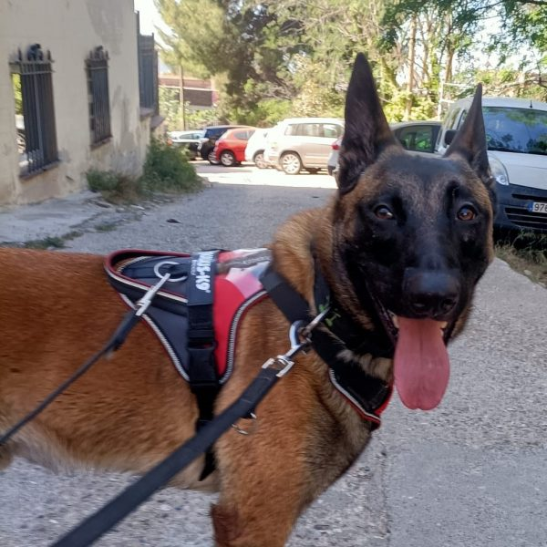

Ells també esperen



Boki es un precioso pastor belga malinois que llegó a la protectora hace más de tres años, cuando su familia tuvo que abandonar el país. Como suele ocurrir con perros de esta raza, la vida en el refugio le resulta especialmente difícil. Vivir en un espacio limitado y, sobre todo, no contar con una figura de referencia a su lado es algo que le afecta profundamente. Durante todo este tiempo no hemos logrado encontrar a la persona adecuada que pueda ofrecerle la estabilidad y el compromiso que tanto necesita y merece.
Boki es un perro con un alto nivel de actividad física y mental, necesita estimulación diaria, ejercicio y retos que le permitan canalizar toda su energía e inteligencia. Es un perro muy cariñoso, sociable con personas y con otros perros, pero no es adecuado para personas inexpertas o que no puedan implicarse plenamente en su bienestar.
Le encanta salir a pasear, rastrear, explorar y socializar. Es muy inteligente, aprende con facilidad y pasea correctamente con correa. Sin embargo, Boki se siente perdido cuando no tiene a una persona en la que confiar plenamente, alguien que le marque el camino y le transmita seguridad para que pueda relajarse y sentirse en paz.
Además, Boki necesita una familia que no lo deje solo hasta haber trabajado adecuadamente los periodos de ausencia. Cuando se queda sin su referente lo pasa realmente mal, hasta el punto de intentar escapar para buscarlo, con el consiguiente riesgo de hacerse daño. Por ello, es fundamental que su futura familia tenga tiempo, paciencia y compromiso para ayudarle a superar esta dificultad.
Boki solo necesita a esa persona especial que le devuelva la estabilidad, el amor y la confianza ue perdió. A cambio, ofrecerá lealtad, cariño y una conexión única.